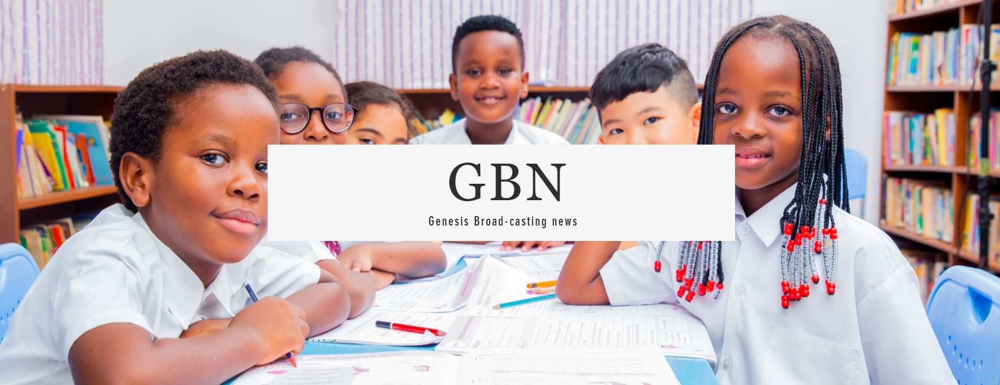

Welcome
Welcome to GBN - Genesis Broad casting news Where Every Child counts every moment mattars
About Genesis
Genesis schools Curriculum equips children for life by fostering informed curiosity and a lifelong love of learning. it provides the Cambridge International Curriculum. From the age of five to the age of nineteen, our Pathway provides pupils with a clear path to academic achievement. Genesis Schools designs its curriculum on how we want children to learn, with a diverse choice of courses and various delivery methods. This allows children to find new abilities and a larger universe, as well as to gain life skills that will allow them to prosper throughout their schooling, employment, and life. Our programmes and credentials are based on the international education worldwide standard. They are developed by subject matter experts, are founded on academic rigour, and are informed by the most recent educational research. They provide a solid foundation for students to advance from one level to the next, and they are effectively supported by teaching and learning tools. Our objective is to be the world leader in providing educational benefit via the provision of international programmes and qualifications for school education. We work with Cambridge International to create Cambridge learners who are self-assured, responsible, introspective, inventive, and engaged, preparing them for success in the contemporary world.
About GBN
GBN - Genesis broadcasting news - is a news channel that the head girl and head boy have been working on to provide weely news every week.